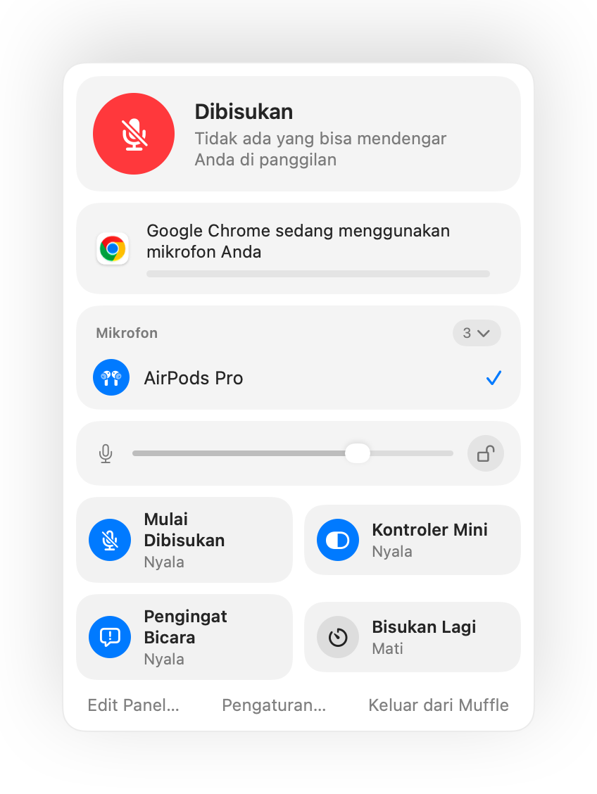

Fitur bisukan AirPods tidak berfungsi di Mac? Ini solusinya
macOS memungkinkan Anda membisukan panggilan dengan menekan batang AirPods, tetapi hanya jika app panggilan mendukungnya. Banyak yang tidak, termasuk Chrome dan panggilan web di dalamnya. Anda menekan, mendengar nada kesalahan singkat, melihat pesan “Cannot Control Mic”, dan panggilan tetap mendengar suara Anda.
Muffle menambahkan dukungan itu ke setiap app. Muffle menerima tekanan tersebut, membisukan mikrofon Mac Anda, dan memutar nada bisukan yang biasa.
Buat tekanan AirPods membisukan app apa pun
- Instal Muffle dan izinkan akses mikrofon. macOS hanya meneruskan tekanan ke app yang bisa menggunakan mik.
- Pastikan “Bisukan dan aktifkan suara dengan menekan AirPods” aktif di Pengaturan Muffle.
- Bergabunglah ke panggilan. Tekanan hanya membisukan saat ada app yang sedang menggunakan mikrofon.
- Tekan batangnya sekali untuk membisukan dan tekan lagi untuk mengaktifkan suara.

- Di luar panggilan, tekanan tetap memutar dan menjeda musik seperti biasa.
- Jika AirPods Anda menggunakan tekanan berbeda untuk kontrol panggilan, periksa pengaturan AirPods Anda di Pengaturan Sistem.
Pertanyaan umum
Mengapa Mac saya memutar suara kesalahan saat saya menekan AirPods?
App yang Anda gunakan untuk menelepon tidak mendukung tekanan bisukan AirPods, sehingga macOS menolaknya. Dengan Muffle berjalan, tekanan tersebut justru membisukan mik Anda.
AirPods mana yang mendukung tekanan bisukan?
AirPods Pro, AirPods 3 dan lebih baru, serta AirPods Max, ditambah model Beats dengan kontrol panggilan.